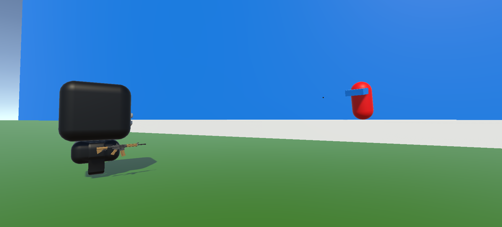

AI

Valentin had been looking for a long time to implement a bot with a field of vision, able to hunt and shoot the player once in the field but without success because the hunting part was too much trouble.
So he settled on an intermediate compromise by implementing in the training area a space where the player can fight "turret bots" that automatically shoot him when he enters their field of vision. The player can improve his aim while waiting for friends to join him in a game.

For the second defense, we had already implemented a "turret" AI able to shoot at the player depending on the distance he is at.
In addition, the player spawned on a sort of empty field without any obstacles. Now, the player can connect to the training ground and appear on the Area 53 map where 3 AI are already present.
The player must move around the map to find and kill them.
The AIs patrol around their point of appearance until they see the player. They then start chasing the player until they are in range and finally shoot him. The fight lasts indefinitely as long as the player does not leave the game.